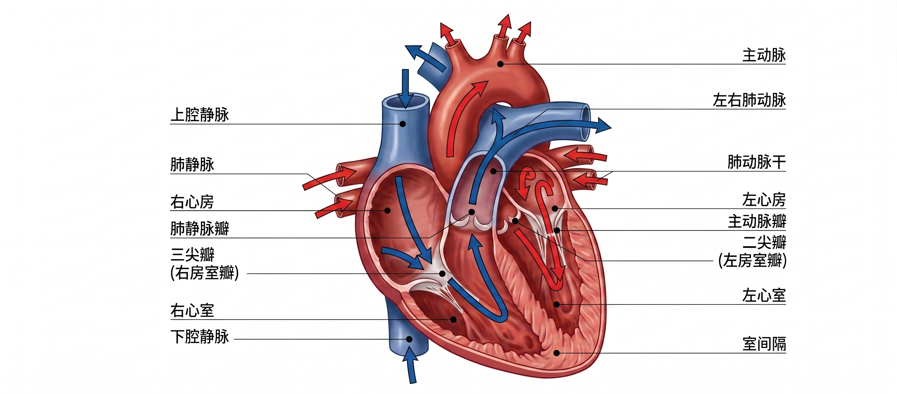
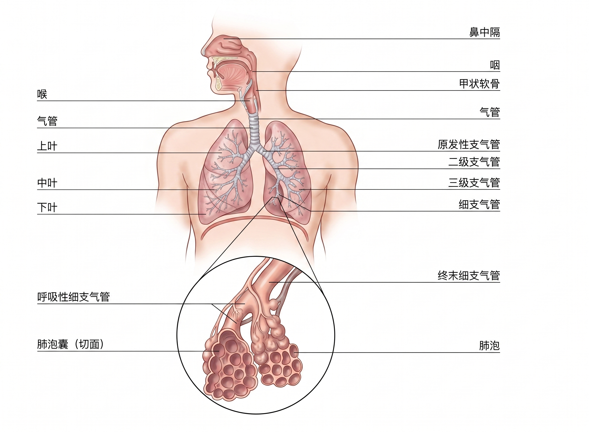
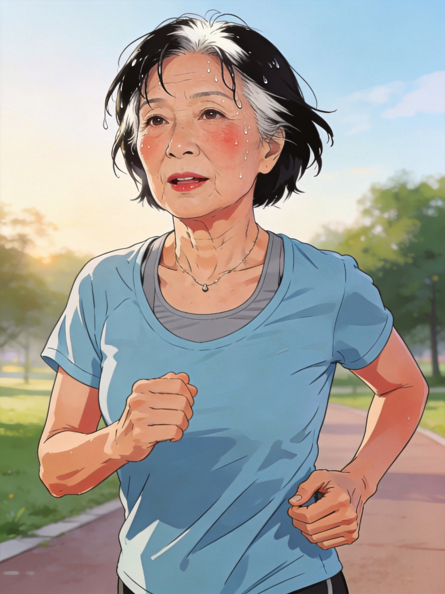
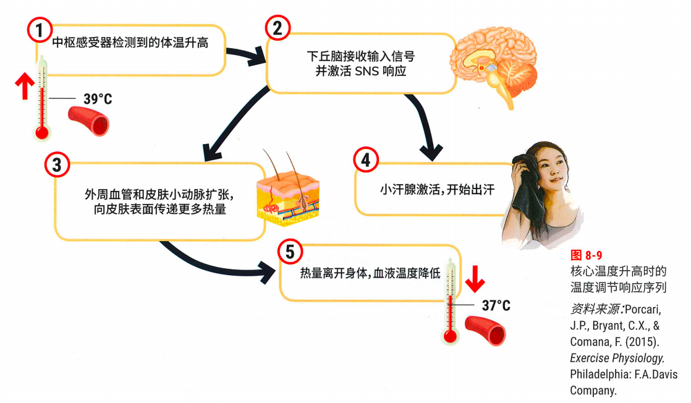
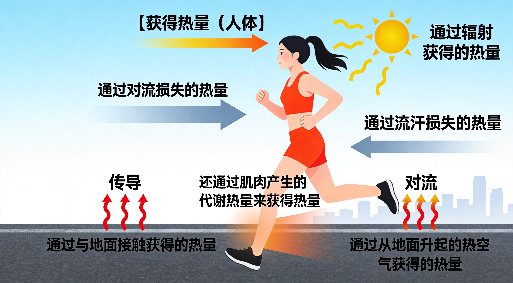
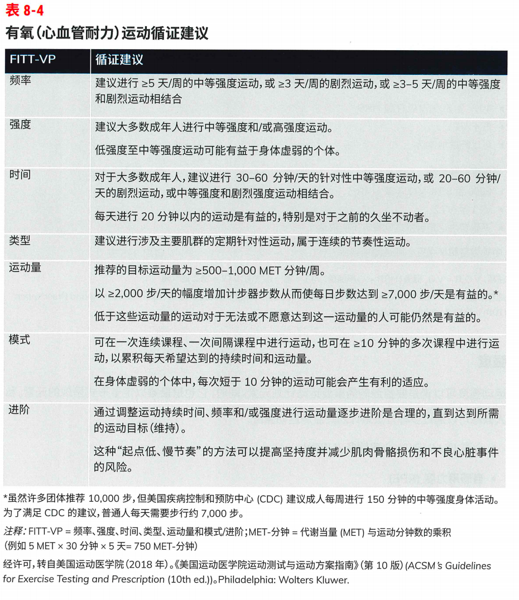
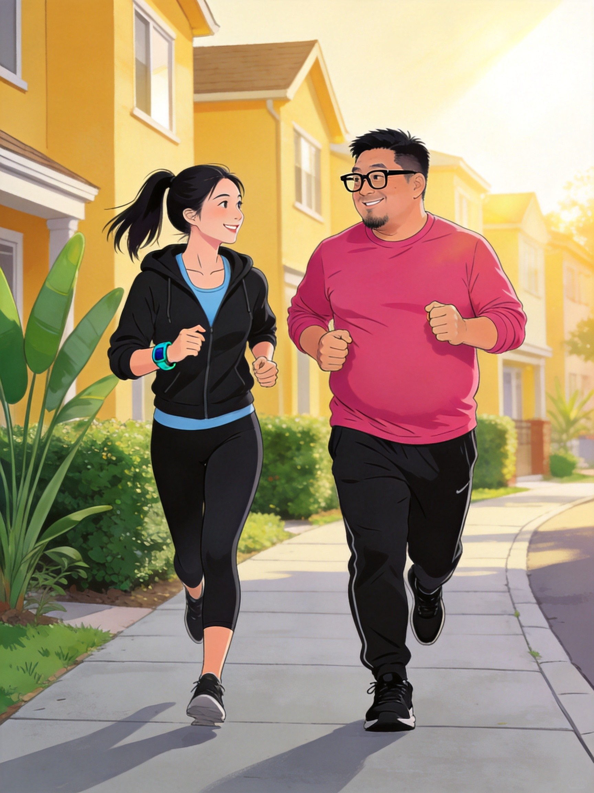
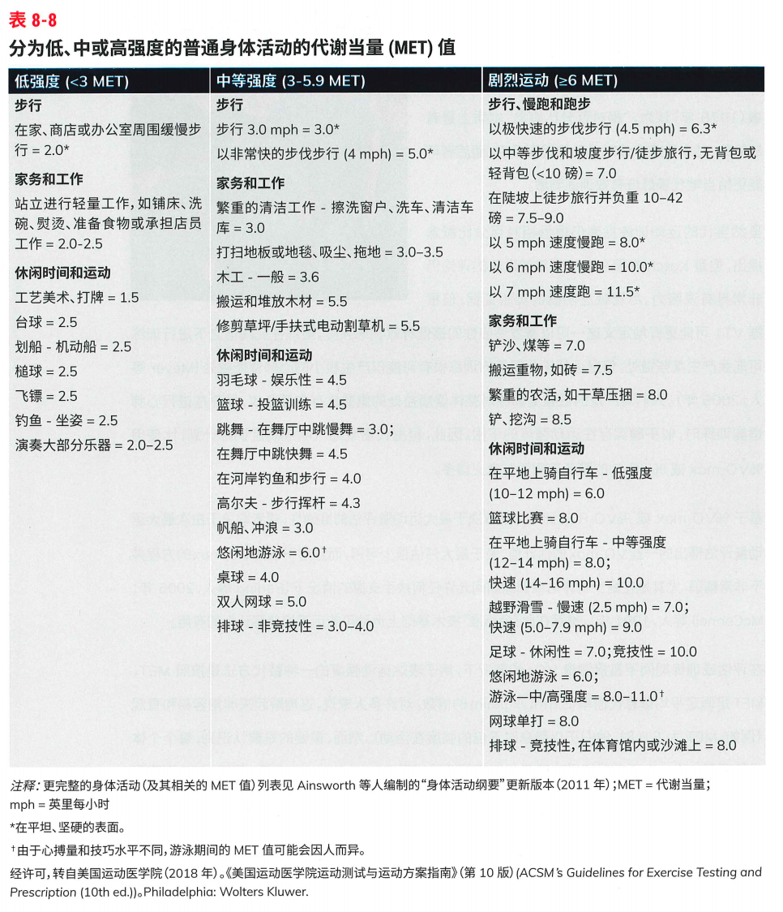
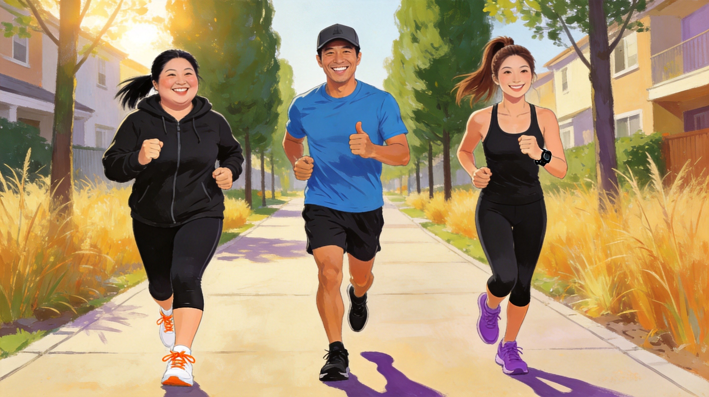

心肺训练：生理机能、评估和计划
1 解剖学系统
1.1 心血管系统
核心知识
心血管循环系统为闭合循环系统，分为大循环与小循环，亦称为体循环和肺循环。大循环即体循环，是血液由心脏泵出流经全身的循环路径；小循环即肺循环，全身回流的静脉血汇入心脏后，依次流经右心房、右心室，再进入肺部。
心血管系统是一个精密的闭合循环系统，血液在这个封闭管道中永不停歇地流动。系统分为两条主要回路：
● 大循环（体循环）：血液从心脏出发，流经全身，再返回心脏
左心室 → 大动脉 → 小动脉 → 毛细血管(物质交换) → 静脉 → 右心房
● 小循环（肺循环）：血液从心脏出发，流经肺部，完成气体交换，再返回心脏
右心室-肺（交换气体）-左心房（继而进入左心室进入大循环）
血液在肺部完成气体交换，排出二氧化碳并重新充盈氧气后，回流至左心房，经二尖瓣进入左心室，再由左心室泵送至全身各处。
由心脏泵出的血液称为动脉血，回流至心脏的血液称为静脉血；
● 动脉血 ：动脉里的血（大部分为富氧血）
● 静脉血： 静脉里的血 （大部分为缺氧血）
例外是肺动脉（流的是缺氧血）和肺静脉（流的是富氧血）。
💡 记住"动出静回"
大循环中动脉流出的是富氧血，静脉流回的是缺氧血）。
小循环（肺循环）则相反：肺动脉流的是缺氧血，肺静脉流的是富氧血
● 想象血液是一场物流配送：
● 动脉是高速公路
● 小动脉是城市道路
● 毛细血管是最后100米配送点（真正的货物交换发生在这里）
● 静脉是返程物流通道
两大循环的核心对比：
表5-5
| 循环类型 | 别称 | 起点 | 终点 | 主要功能 |
|---|---|---|---|---|
| 大循环 | 体循环 | 左心室 | 右心房 | 全身供氧、营养输送 |
| 小循环 | 肺循环 | 右心室 | 左心房 | 肺部充氧、二氧化碳排出 |
● 记住"左出右回"：
● 左心室出发 → 全身跑一圈 → 右心房回来（大循环/体循环）
● 右心室出发 → 肺部跑一圈 → 左心房回来（小循环/肺循环）
肺循环的气体交换原理：
缺氧血到达肺部 → 释放CO₂ → 吸收O₂ → 富氧血返回心脏
● 肺部相当于氧气充气站：血液把"废气"卸载，留下"新鲜氧气"。
心脏解剖结构分为四个腔室，先以上下划分心房与心室，再以左右区分，分别为左心房、左心室、右心房、右心室。

图5-1
心脏四腔室空间定位：
● 上下结构：上方是"接待室"（心房），下方是"发货部"（心室）
● 左右结构：左心负责全身供氧，右心负责肺部充氧
● 口诀："上房下室，左富右贫"
人体血液输出均由心室完成，全身回流血液先汇入心房，再流入心室。
💡 心脏是单向阀门系统：血液必须按"心房→心室"的顺序流动，绝不能倒流。心房是"中转站"，心室是"发动机"。
左心室泵出的动脉血，从左心室出发为起点，流经全身毛细血管完成物质交换后回流；回流后的缺氧静脉血先汇入右心房，经三尖瓣流入右心室。
知识点总结
核心逻辑：
• 心血管系统是闭合循环，分为体循环（大循环）和肺循环（小循环）
• 心脏四腔室功能：上方心房接收血液，下方心室泵出血液
• 左心系统服务全身供氧，右心系统服务肺部充氧
• 动脉血≠动脉血管里的血，而是含氧量高的血
互动考题：
血液从左心室出发，流经全身后回到心脏，依次经过哪些结构？
● 大循环：左心室→全身→右心房
● 小循环：右心室→肺部→左心房
● 口诀："左出右回，环环相扣"
● 血流方向：心房→心室→动脉，单向不逆流
1.2 呼吸系统
核心知识
呼吸系统由鼻腔、咽、喉、气管、支气管和肺共同组成。
呼吸系统器官层级：
鼻腔 → 咽 → 喉 → 气管 → 支气管 → 细支气管 → 肺泡

图5-2
● 记住这条"呼吸道"就像一棵倒挂的树：
● 树干是气管
● 树枝是支气管
● 树叶是肺泡（气体交换的真正场所）
● 树根是鼻腔（空气过滤加温的第一站）
需掌握核心重点：人体最主要的吸气肌为膈肌，膈肌也是全身骨骼肌中唯一维持生命所需要的 的骨骼肌；其余常规骨骼肌均非维持生命必需，仅有膈肌具备不可替代的生命基础功能。
膈肌的独特地位：
● 膈肌是呼吸的主发动机，● 其他骨骼肌（如肱二头肌、股四头肌）"罢工"人还能活
● 膈肌一旦停止工作≈生命终止
● 这就是为什么呼吸训练对健康至关重要
● 口诀："膈肌是唯一，没有之一"
● 类比：膈肌是呼吸系统的"心脏"，其他肌肉都是"辅助员工"
吸气时膈肌下降，呼气时膈肌上升；膈肌在胸腔内的运动原理，可类比针管活塞的启闭运动。
膈肌运动原理：
【吸气】膈肌下降 → 胸腔容积增大 → 气压降低 → 空气被"吸入"原理类似：注射器活塞向外拉 → 气体被吸入【呼气】膈肌上升 → 胸腔容积减小 → 气压升高 → 气体被"挤出"原理类似：注射器活塞向内推 → 气体被挤出
● • 口诀："膈肌下行好进气，膈肌上行来吐气"
● • 类比：膈肌就像注射器的活塞，下拉抽药、上推给药
知识点总结
核心逻辑：
• 呼吸系统核心是膈肌——唯一对生命至关重要的骨骼肌
• 膈肌下降→胸腔扩大→吸气；膈肌上升→胸腔缩小→呼气
• 类比针管活塞：下拉吸气、上推呼气
互动考题：
为什么说膈肌是"唯一对生命至关重要的骨骼肌"？其他肌肉为什么不是？
● 呼吸系统：鼻腔→咽→喉→气管→支气管→肺
● 膈肌：呼吸主肌、生命的唯一、活塞运动
2 心肺系统的生理机能
心肺生理机能可归纳为三大核心过程：摄氧能力、输氧能力、用氧能力。
● 第一和第三个均为"摄氧能力"，完整过程为携氧、氧输送与组织氧摄取
● 氧气物流链三环节应为：摄氧(Intake)→输氧(Delivery)→用氧(Usage)
● 口诀："一摄二输三用，氧气跑完全程"
● 类比：摄氧是"进货"，输氧是"物流"，用氧是"消费"
2.1 携氧能力
核心知识
摄氧能力由肺部通气量与血液血红蛋白两大要素构成。
摄氧能力的两大支柱：
表5-6
| 要素 | 负责器官 | 功能 | 影响因素 |
|---|---|---|---|
| 肺部通气量 | 肺、呼吸道 | 空气进入血液的入口 | 呼吸道疾病、肺部疾病 |
| 血红蛋白 | 血液 | 氧气运输载体 | 贫血、血红蛋白偏低 |
● 类比：摄氧就像电商进货
● 肺部通气量 = 平台流量（有多少货能进来）
● 血红蛋白 = 配送车辆（有多少车能运货）
● 肺部通气量 = 平台流量（有多少货能进来）；血红蛋白 = 配送车辆（有多少车能运货）
若存在肺部或呼吸道疾病，肺部血氧含量会下降，直接导致运动能力降低。
第一道关卡断裂：
呼吸道/肺部疾病 → 氧气进不去 → 运动能力下降
💡 肺部是氧气进入人体的"安检口"，安检口关闭，再好的心脏也白搭。
运动强度过高时，血液二氧化碳浓度升高、氧气供应不足，会迫使运动者即刻停止运动，产生明显缺氧憋闷感。
急性缺氧反应：
● 运动强度超过摄氧极限
● 氧气供不应求
● CO₂堆积
● 身体强制"停机保护"
血红蛋白浓度偏低或贫血人群，摄氧能力会受到限制，运动中极易产生疲劳感；运动时骨骼肌酸度上升、局部氧浓度下降，疲劳反应会更加明显。
贫血对运动的影响：
表5-7
| 状态 | 摄氧能力 | 运动表现 |
|---|---|---|
| 正常血红蛋白 | 正常 | 良好 |
| 贫血/血红蛋白低 | 受限 | 疲劳、易喘 |
● 血红蛋白 = 氧气的"快递小哥"
● 小哥数量不够，再近的路也送不完货
• 场景：客户抱怨运动时特别容易疲劳
• 错误做法：认为是客户意志力不足
• 正确做法：建议体检排查贫血或血红蛋白问题
• 常见误区：忽视生理因素对运动能力的限制
2.2 氧输送
图5-3
核心知识
输氧能力核心公式：
心输出量 = 心率（HR）× 每搏输出量（SV）
即每分钟心脏总泵血量，由心率与单次心跳泵血量共同决定。
心输出量公式：
● 口诀："心跳快×每次多 = 泵血多多"
● 类比：心输出量 = 奶茶店每分钟卖出的杯数 = 客人数量(HR) × 每人买几杯(SV)
心脏功能越强、每搏输出量越高，同等负荷下心率越低；若每搏输出量下降，心率会代偿性升高，以此保证全身组织血液与养分的稳定供应。
心脏的代偿机制：
表5-8
| 心脏状态 | SV（每搏量） | HR（心率） | CO（总泵血） |
|---|---|---|---|
| 训练有素 | 高 | 低 | 正常 |
| 心脏较弱 | 低 | 高 | 正常 |
● 训练有素的心脏 = 大排量发动机，每次喷油多，转速可以低
● 较弱的心脏 = 小排量发动机，必须高转速才能维持动力
● 口诀："SV高则HR低，训练让心脏更省力"
• 场景：向客户解释为什么运动员心率低
• 错误做法：说"运动员心脏有问题"
• 正确做法：解释"运动员心脏泵血效率高，安静时不需要跳那么快"
• 常见误区：客户看到体检报告窦性心率过低会担心，其实这可能是心脏健康的信号
2.3 氧摄取
核心知识
组织用氧能力，是身体组织利用氧气合成ATP供能的能力。
ATP——细胞的能量货币：
葡萄糖 + 氧气 → 线粒体燃烧 → ATP（能量） + CO₂ + H₂O
● ATP = 细胞的"充电宝"
● 线粒体 = 充电宝的"发电机"
● 有氧代谢 = 最稳定的发电模式（虽然功率不是最高）
影响该能力最关键的因素为：线粒体的密度与体积。
线粒体的核心地位：
表5-9
| 因素 | 作用 |
|---|---|
| 线粒体密度 | 单位肌肉内线粒体数量 |
| 线粒体体积 | 每个线粒体的大小 |
| 综合效果 | 有氧氧化供能能力的上限 |
● 线粒体 = 细胞的"微型发电厂"
● 发电厂数量多、规模大 → 供电能力强
● 口诀："线粒体多又大，有氧耐力顶呱呱"
● 核心结论：线粒体的密度与体积是影响组织氧摄取和有氧代谢能力的重要因素
知识点总结
核心逻辑：
• 心肺生理三环节：摄氧→输氧→用氧，构成完整氧气物流链
• 摄氧能力：肺部+血红蛋白决定氧气进入量
• 输氧能力：心输出量=HR×SV，训练提升SV降低HR
• 用氧能力：线粒体密度与体积决定有氧供能上限
互动考题：
为什么马拉松运动员的静息心率通常比普通人低？
● 心输出量 = HR × SV
● 训练使SV↑，所以HR↓（代偿机制）
● 线粒体 = 细胞的微型发电厂
● 线粒体密度决定有氧耐力上限
3 急性和慢性心肺运动的生理适应
3.1 肌肉系统
长期心肺训练可增加活动肌群的毛细血管密度，促进线粒体的数量、密度与功能改善，并提高肌糖原储备和利用氧的能力。
3.2 心血管系统
急性运动时，心率、每搏输出量和心输出量随工作需求变化。长期训练可使心脏泵血效率提高，并改善活动肌群的血流与氧输送能力。
3.3 呼吸系统
运动时，通气量会随代谢需求上升。心肺适能提高后，客户在相同亚极量工作负荷下往往能以更经济的呼吸反应完成运动。
3.4 提高心肺适能所需时间
训练适应通常在初期改善较快，随着体能提高，改善速率可能逐渐减慢。进程取决于起始体能、训练刺激、恢复、健康状态和个体差异，不应把某一时间点当作所有人的固定平台期。
核心知识
正式进入ACE IFT模式前，需掌握运动的身体适应原理。
适应原理是训练科学的基础：不了解身体如何适应，就无法设计有效训练计划。
运动学中"适应"定义：身体受到运动刺激后，产生的结构性与功能性改变，分为短期适应与长期适应。
适应的时间维度：
表5-10
| 类型 | 时间线 | 特点 |
|---|---|---|
| 短期适应 | 即刻~数小时 | 可逆，停止训练即消失 |
| 长期适应 | 数周~数月 | 结构改变，需要持续刺激维持 |
● 短期适应 = 临时抱佛脚，考完就忘
● 长期适应 = 真正学会的知识，刻进骨子里

图5-4
初次开展运动，心肺系统即刻产生适应性变化；最大摄氧量随运动负荷增加逐步提升，持续训练训练最初数月改善较快，随后改善速率可能逐渐减慢。
适应的时间曲线：
最大摄氧量 ↑ │ ╭───────── plateau (平台期) │ ╱ │ ╱ │ ╱ │ ╱ │ ╱ │╱ └────────────────────────→ 时间 6个月左右达到平台期（个体差异较大，体能基础越好提升越慢）
同时身体会出现良性适应：毛细血管密度提升、线粒体密度与体积增大、肌肉糖原储存能力增强。
三大适应性改变：
表5-11
| 适应类型 | 具体变化 | 训练效果 |
|---|---|---|
| 毛细血管密度 | 密度增加 | 氧气交换效率增加 |
| 线粒体 | 数量↑ + 体积↑（发电厂扩建） | 氧化供能效率增强 |
| 糖原储存 | 肌肉糖原库更大（油箱变大） | 运动表现，耐力提升 |
● 毛细血管↑ = 物流网点加密
● 线粒体↑ = 发电厂扩容
● 糖原↑ = 油箱加大
3.5 稳态和间歇性运动的生理适应
稳态训练和高强度间歇训练都可用于改善心肺适能，但所需恢复、耐受性和适用人群不同。应先根据客户的健康筛查、当前体能和训练经验选择方式，再循序渐进地提高刺激。
HIIT vs 稳态训练：
表5-12
| 训练类型 | 效果 | 适用人群 |
|---|---|---|
| HIIT | 效率高、省时间 | 体能良好者 |
| 稳态有氧 | 稳定、安全 | 所有人，尤其体弱/慢病 |
● HIIT = 加倍浓缩咖啡，效果猛但需谨慎
● 稳态 =牛奶咖啡，稳定温和
"HIIT虽好，新手别急，安全第一"
• 场景：为体弱客户设计训练
• 错误做法：推荐HIIT作为首选
• 正确做法：从稳态有氧开始，逐步评估后再考虑HIIT
• 常见误区：HIIT风靡不代表适合所有人
所有心肺及体能训练，必须遵循渐进超负荷原则，需循序渐进提升训练强度，不可长期维持同一负荷，亦不可骤然加量。
渐进超负荷原则：
表5-13
| 原则 | 含义 |
|---|---|
| 渐进 | 逐步增加，不可一步到位 |
| 超负荷 | 强度略高于当前耐受水平 |
| 禁忌 | 不可长期同一负荷（平台期） |
| 禁忌 | 不可骤然加量（受伤风险） |
知识点总结
核心逻辑：
• 适应是身体对运动刺激的结构性/功能性改变
• 长期适应包括：毛细血管↑、线粒体↑、糖原↑
• 渐进超负荷是心肺训练的核心原则
• 6个月左右达到训练适应平台期（个体差异较大）
互动考题：
为什么不能长期保持同一训练强度？
● 适应 = 新刺激 → 新改变
● 无新刺激 = 无新适应 = 停止进步
● 10%法则：进阶幅度应保守，10%可作为部分情境下的参考上限，但不是适用所有客户的固定规则
● 三大适应：毛细血管↑、线粒体↑、糖原↑
● 渐进超负荷是核心原则
● 10%法则：进阶幅度应保守，10%可作为部分情境下的参考上限，但不是适用所有客户的固定规则
4 运动时的环境因素
4.1 在高温下运动健身
核心知识
运动中骨骼肌收缩会产生大量热量，身体需依靠体温调节系统维持稳态。
产热与散热平衡：
骨骼肌收缩 → 大量热量产生 → 体温升高 ↓ 体温调节系统 → 散热
💡 运动时身体是"高性能引擎"，必须配套"散热系统"才能正常运行。
人体体温调节中枢位于大脑下丘脑；中枢感受器检测到体温升高后，下丘脑发出调节指令，使外周血管与皮肤小动脉扩张，向体表输送更多热量，同时激活小汗腺分泌汗液，通过散热途径带走体内余热。

图5-5
体温调节机制：
体温升高 → 下丘脑检测到 → 下丘脑发出指令 ↓ ┌───────────────┼───────────────┐ ↓ ↓ ↓ 外周血管扩张 皮肤小动脉扩张 汗腺分泌 ↓ ↓ ↓ 更多热量输送体表 热量散发 汗液蒸发散热
● 下丘脑 = 体温的"中央空调遥控器"
● 口诀："热了多散热，冷了少散热，全靠下丘脑"
人体热量散失有四种形式：辐射、传导、对流、蒸发。
三种散热方式：

图5-6
表5-14
| 方式 | 原理 | 日常例子 |
|---|---|---|
| 辐射 | 红外线形式传递，无需物理接触 | 太阳照射、烤火取暖 |
| 传导 | 物理接触，热量由高温向低温传递 | 冰敷、触摸冷物体 |
| 对流 | 依托空气/水流传递热量 | 风吹凉快、游泳 |
● 辐射 = "隔空传功"（无需接触）
● 传导 = "贴身传输"（必须接触）
● 对流 = "介质传输"（风/水作为媒介）
● 蒸发 = "出汗降温"（液态→气态带走热量，运动时主要散热方式）
热量传导至皮肤表面后，可通过蒸发散热；汗液聚集足够热量后汽化变为水蒸气，进一步降低体表温度。
蒸发散热原理：
汗液分泌 → 吸收体表热量 → 汽化(液→气) → 带走热量 → 降温
● 汗液 = 人体的"天然空调"，出汗即启动制冷模式
● 出汗 = 启动空调制冷模式
● 口诀："汗水一蒸发，热量全跑光"
运动中体温过高，会显著加重心脏负荷、降低运动表现，甚至引发安全风险。因此运动环境需保持凉爽、通风、氧气充足。
高温运动的双重风险：
表5-15
| 风险 | 后果 |
|---|---|
| 心脏负荷↑ | 心率代偿性升高，可能超出安全范围 |
| 运动表现↓ | 疲劳提前、力量下降 |
| 安全风险 | 严重时可危及生命 |
● 高温运动 = 给发动机同时加压又加热
● 危险等级极高
• 场景：夏季户外训练
• 错误做法：忽视环境温度，坚持原计划训练
• 正确做法：选择凉爽时段、注重通风补水
• 常见误区：室内有空调就安全？湿度也是重要因素
高温相关疾病的识别与处理
核心知识
高温环境下体温异常升高，会引发两类高危急症：热衰竭、中暑，二者均需立即就医处置。
高温急症的两大类型：
表5-16
| 类型 | 核心体温 | 危险性 | 紧急程度 |
|---|---|---|---|
| 热衰竭 | < 40℃ | 高 | 需立即处置+就医 |
| 中暑 | ≥ 40℃ | 极高 | 危及生命+必须就医 |
● 口诀："衰竭40下，中暑40上"
● 40℃ = 生命警戒线
● 热衰竭：体温升高但低于40℃，表现为大汗、面色苍白、皮肤湿冷；
● 中暑：核心体温超40℃，表现为身体高热无汗、皮肤干燥潮红。
热衰竭 vs 中暑 鉴别表：
表5-17
| 症状 | 热衰竭 | 中暑 |
|---|---|---|
| 核心体温 | < 40℃ | ≥ 40℃ |
| 出汗 | 大汗淋漓 | 无汗（高热无汗） |
| 皮肤 | 湿冷、苍白 | 干燥、潮红 |
| 意识 | 可能清醒 | 可能意识障碍 |
| 处理 | 降温+补液 | 立即物理降温+急救 |
● 热衰竭 = "出汗过多+水分流失" → 皮肤湿冷
● 中暑 = "散热系统崩溃" → 无汗、干燥、高热
● 口诀："热衰竭会出汗，中暑反而干"
现场急救流程：
1. 立即转移至阴凉通风处；
2. 热衰竭：抬高下肢，适量补充水分电解质；
3. 中暑：脱去多余衣物，用湿毛巾、冰袋、风扇等全力物理降温；
4. 无论热衰竭还是中暑，现场急救同时必须拨打急救电话。
高温急症急救流程：
● 热衰竭处理：补液为主（水分流失）
● 中暑处理：降温为主（散热崩溃）
● 口诀："衰竭补液，中暑降温，两者都打120"
• 场景：训练中客户出现中暑迹象
• 错误做法：让客户继续运动"出出汗就好了"
• 正确做法：立即停止训练，按流程急救
• 常见误区：以为降温就是给头部冰敷，应该全身降温
高温运动预防原则：
1. 高温环境运动前，设置9～14天热适应期；
2. 穿着透气通风运动服饰；
3. 遵循科学补水方案。
高温运动三大防线：
表5-18
| 防线 | 具体措施 |
|---|---|
| 热适应 | 运动前9-14天热适应训练 |
| 装备 | 透气、通风、浅色服装 |
| 补水 | 运动前/中/后科学补水 |
● 口诀："热适应要9到14天，穿透气补水分"
运动补水标准：
1. 运动前至少4小时：每公斤体重补充5～7ml水分；
2. 运动中：依据实时体重流失量分次补水；
3. 运动后：每丢失1kg体重，补充1.5L水分。
科学补水时间表：
表5-19
| 时机 | 补水量 | 原则 |
|---|---|---|
| 运动前4小时 | 5-7ml/kg | 提前储备 |
| 运动中 | 视体重流失 | 分次少量 |
| 运动后 | 1.5L/kg | 重度回血 |
● 运动前 = "提前给油箱加油"
● 运动中 = "边跑边补，别等没油"
● 运动后 = "满油箱才安全"
● 口诀："前5-7ml、中分次、后1.5L"
4.2 在低温下运动健身
核心知识
空气与水是主要寒冷刺激源；低温会引发血管收缩，升高外周血管阻力与血压，对高血压、心脏病人群风险较高。
低温对心血管的影响：
低温 → 血管收缩 → 外周阻力↑ → 血压↑ → 心脏负荷↑
● 低温 = 血管"热胀冷缩"
● 收缩的血管 = 更窄的通道 = 更高血压
• 场景：寒冷天气户外运动
• 错误做法：忽略低温对高血压/心脏病人群的风险
• 正确做法：评估客户病史，寒冷天气减少户外训练
• 常见误区：以为室内运动就不需要注意温度
运动后体表带汗，会加速身体热量散失，极易受凉，该风险多见于户外运动，常规室内健身房影响较小。
出汗后受凉风险：
表5-20
| 环境 | 风险 | 应对 |
|---|---|---|
| 户外 | 高（汗水带走大量热量） | 及时擦干、保暖 |
| 室内 | 低 | 正常即可 |
● 汗水 = 移动的"散热器"
● 运动后带汗在冷风中 = 持续失温
4.3 在高海拔地区运动健身
核心知识
海拔分级标准：
● 中高海拔：1500～2500m
● 高海拔：2500～4300m
海拔分级表：
表5-21
| 分级 | 海拔范围 | 风险等级 |
|---|---|---|
| 中高海拔 | 1500-2500m | 中等 |
| 高海拔 | 2500-4300m | 高 |
● 口诀："1500到2500中高，2500以上算高危"
高海拔易诱发高原反应，训练遵循原则：
1. 抵达高海拔首日，不安排任何训练；
2. 适当延长热身与放松整理时长；
3. 全程密切监测身体不适反应。
高海拔运动三原则：
表5-22
| 原则 | 具体做法 |
|---|---|
| 首日休息 | 抵达当天绝对禁止训练 |
| 延长热身 | 热身+放松时间加倍 |
| 监测反应 | 密切观察不适症状 |
● 口诀："首日休息保平安，热身延长防意外"
4.4 在空气污染环境运动健身
核心知识
空气污染可诱发心血管人群心肌缺血、心绞痛发作；可诱发哮喘人群气道炎症与病情急性发作。
空气污染的双重威胁：
表5-23
| 人群 | 风险 |
|---|---|
| 心血管人群 | 心肌缺血、心绞痛 |
| 哮喘人群 | 气道炎症、急性发作 |
● 污染空气 = 呼吸系统的"毒药"
● 心肺问题人群 = 高危易感人群
需特别注意室内隐蔽污染：室内溜冰场丙烷燃料制冰机，易残留高浓度污染物，即便室内运动，也需关注空气质量，规避污染环境训练。
● 口诀："室内不等于安全，空气质量要关注"
• 场景：为客户选择训练场所
• 错误做法：只关注健身房设备，忽视空气质量
• 正确做法：检查通风系统，避免污染环境
• 常见误区：认为室内=安全，室外=危险
知识点总结
核心逻辑：
• 环境因素（温度、海拔、污染）直接影响心肺运动安全
• 高温防中暑（热衰竭<40℃ vs 中暑≥40℃）
• 低温防血管收缩，高血压/心脏病人群风险高
• 高海拔首日必须休息，9-14天热适应
• 空气污染对心肺疾病人群威胁极大
互动考题：
客户在高温环境下运动时出现大汗、面色苍白、皮肤湿冷，应如何判断和处理？
● 热衰竭：<40℃、大汗、湿冷 → 补液+降温+120
● 中暑：≥40℃、无汗、干燥 → 全力降温+120
● 高海拔首日：禁止训练
● 低温：防血管收缩，高血压/心脏病人群风险高
● 运动补水：运动前前5-7ml/kg，运动后根据减少的体重补水，每减少1kg体重，补充1.5L
5 出于健康和健身目的的心肺运动一般指南
核心知识
首先第一部分，先讲大众心肺运动通用指南，这套指南专门针对18-64岁成年人，先记两个核心重点知识点：
1. 每周至少完成150分钟中等强度心肺训练，才能对身体健康产生明确益处；
2. 坚持身体活动带来的健康收益，远大于运动受伤、突发风险的可能性。
两大核心结论："每周150分钟，动比不动强"
表5-24
| 结论 | 核心信息 |
|---|---|
| 最低标准 | 每周150分钟中等强度（底线） |
| 收益对比 | 运动收益 >> 运动风险 |
很多人会有顾虑：平时久坐不动，突然开始运动，会不会出现猝死、受伤的情况？其实不必因此拒绝所有运动。依据2018年美国居民身体活动指南（美国公共卫生与公众服务部发布），可以帮助客户更客观地理解运动的获益与风险。
一、心肺运动具体建议
核心知识
1. 任何活动量，都比完全不运动要好；尽量减少每日久坐时长，把碎片化活动均匀分布在一整天当中。
运动理念：
● 动一点比不动强
● 碎片化活动积少成多
● 均匀分布全天，避免长时间久坐
● 口诀："动总比坐强，碎片也能量"
2. 每周运动标准：
● 150~300分钟中等强度心肺训练；
● 或75~150分钟高强度心肺训练；
● 也可以中等+高强度两者结合；
若运动总量超出以上标准，还能获得额外健康收益。
每周运动标准表：
表5-25
| 强度 | 时间范围 | 特点 |
|---|---|---|
| 中等强度 | 150-300分钟 | 门槛低、易坚持 |
| 高强度 | 75-150分钟 | 效率高、需体能 |
| 混合强度 | 灵活组合 | 最灵活 |
| 超标 | 更多 | 额外收益 |
● 中等强度 = 150-300分钟
● 高强度 = 75-150分钟
● 换算关系：1分钟高强度 ≈ 2分钟中等强度
3. 每周至少安排2天，进行覆盖全身主要肌群的力量强化训练。
力量训练要求：
表5-26
| 要求 | 具体 |
|---|---|
| 频率 | 每周≥2天 |
| 覆盖 | 全身主要肌群 |
● 心肺训练 + 力量训练 = 完整健身方案
● 口诀："心肺每周150，力量两日起"
二、心肺训练核心框架：FITTVP原则
核心知识
分别代表：F频率、I强度、T时长、T运动类型、V运动量、P进阶。

图5-7
FITTVP六大要素：
● 口诀："频强时类量进阶，七字真言记心间"
5.1 频率
● 每周≥5天中等强度运动；
● 或每周≥3天高强度运动；
● 也可3~5天进行中高强度混合训练。
运动频率标准：
表5-27
| 强度 | 最低频率 |
|---|---|
| 中等强度 | ≥5天/周 |
| 高强度 | ≥3天/周 |
| 混合 | 3-5天/周 |
● 口诀："中等5天起，高强3天行"
5.3 持续时间
● 普通成年人：每天30~60分钟中等强度，或20~60分钟高强度；
● 起步运动量：每周500~1000 MET-min（代谢当量·分钟），日常步数先达到每天≥2000步，循序渐进进阶到每天≥7000步，健康价值极高；
● 单次运动建议持续10分钟以上；零基础、体能偏弱人群，从小于10分钟的短时运动开始，也有健康获益，只要动起来就比久坐好；
● 运动进阶必须循序渐进，不可贸然加量。
运动时长标准：
表5-28
| 人群 | 单次时长 | 强度 |
|---|---|---|
| 普通成人 | 30-60分钟 | 中等 |
| 普通成人 | 20-60分钟 | 高强度 |
| 零基础 | <10分钟 | 安全为前提 |
表5-29
| 步数目标 | 含义 |
|---|---|
| 2000步/天 | 起步目标 |
| 7000步/天 | 高健康价值目标 |
● 口诀："中等3060，高强2060，零基础动就够"
● 步数口诀："起步2000，健康7000"
5.2 强度
3.1 心率判定
传统公式：最大心率=220-年龄，这个公式存在±12BPM误差，精准度不高，后续会给到更精准的估算公式。
● 储备心率：最大心率 − 静息心率；
● 靶心率（目标心率）：储备心率×目标强度（如60%） + 静息心率；
按照60%~89%的强度区间，就能算出个人训练的目标心率区间。
心率相关公式：
1. 最大心率估算公式
传统公式：最大心率（MHR）= 220 - 年龄 （误差±12BPM）Tanaka公式①：最大心率（MHR）= 208 - 0.7 × 年龄 （Tanaka公式，误差±7-8BPM）Gellish公式②：最大心率（MHR）= 207 - 0.7 × 年龄 （Gellish公式，适用于常运动人群）
三个公式对比：220-年龄简单好记但误差大；Tanaka公式和Gellish公式都是基于人群数据建立的最大心率估算方法。所有年龄预测公式都存在个体误差，应使用ACE指定的方法，并结合RPE、谈话测试和客户的实际反应判断强度。
2. 储备心率与靶心率公式
储备心率（HRR）= 最大心率 - 静息心率靶心率 = 储备心率 × 目标强度% + 静息心率
示例计算（35岁，静息心率72BPM）：
表5-30
| 公式 | 最大心率 | 储备心率 | 60%强度靶心率 | 80%强度靶心率 |
|---|---|---|---|---|
| 传统220-年龄 | 185 BPM | 113 BPM | 140 BPM | 162 BPM |
| Tanaka公式 | 183.5 BPM | 111.5 BPM | 139 BPM | 161 BPM |
| Gellish公式 | 182.5 BPM | 110.5 BPM | 138 BPM | 160 BPM |
● 口诀："220减年龄，储备心率减静息，目标心率加回去"
● 类比：靶心率 = 保险箱密码，需要三步计算
● 靶心率计算：
● ①计算最大心率
● ②最大心率-静息心率=储备心率
● ③储备心率×强度%+静息心率=靶心率
• 场景：为客户计算靶心率
• 错误做法：直接用"220-年龄"作为靶心率上限
• 正确做法：使用储备心率法，考虑静息心率差异
• 常见误区：忽视±12BPM误差，靶心率应该是区间而非固定值
3.2 RPE 自觉用力程度
图5-8
分两种量表：
1. 经典博格量表 6~20分：数值×10可近似对应当下心率，6分对应静息、20分对应极限心率，但需要对照心率参考，繁琐且不够精准；
2. 0~10分量表：0分完全不吃力，10分力竭极限。
RPE量表对比：
表5-31
| 量表 | 范围 | 低强度 | 中等强度 | 高强度 |
|---|---|---|---|---|
| 博格6-20 | 6-20 | 9-11 | 12-13 | 14-20 |
| 0-10 | 0-10 | 3-4 | 5-6 | 7-10 |
RPE的局限性：
新手容易低估运动强度；力量训练爱好者容易只关注肌肉酸胀，忽略呼吸频率，同样会低估心肺强度；部分肌肉发达人群做骑行、爬坡时，腿部无明显发力感，但呼吸已超负荷，极易误判强度。
• 场景：客户说"RPE只有6，很轻松"
• 错误做法：完全相信RPE，不做调整
• 正确做法：结合谈话测试、心率综合判断
• 常见误区：把RPE当作唯一标准
3.3 VO₂Max最大摄氧量 & 摄氧量储备
摄氧量储备和心率储备逻辑一致；最大摄氧量可专业测试估算，但跑步机、扶手助力类器械测试结果误差较大。
专业测试注意（需与主人确认）：
● 最大摄氧量需要专业设备测量
● 跑步机测试误差较大
● 扶手助力会虚高结果
● VO₂max = 心肺功能的"马力"指标
3.4 MET 代谢当量（梅托）

图5-9
1MET = 人体完全静息状态下的氧气消耗量。
强度划分标准：
● ＜3MET：低强度；
● 3~5.9MET：中等强度；
● ≥6MET：高强度。
MET强度分级：
表5-32
| MET值 | 强度 | 举例 |
|---|---|---|
| <3 | 低强度 | 慢走、站立 |
| 3-5.9 | 中等强度 | 快走、骑行 |
| ≥6 | 高强度 | 跑步、游泳 |
● MET = 静息代谢的倍数
● 3MET = 3倍静息代谢
● "3以下是低，3到6中等，6以上高强度"
MET实用价值：
可以对照表格替换运动方式，比如没时间跑步机快走（5MET），可以用修剪草坪、搬运木材、打网球、羽毛球、投篮等同等MET值的活动替代。
同时可通过MET精准计算热量消耗：体重(kg)×MET值×3.5×时间（分钟），换算氧气消耗后，除以1000（从毫升换成升）再乘以系数5，即可得出卡路里消耗；健身房有氧器械显示的MET值，可直接用来给会员计算热量。

图5-10
MET热量计算公式：
热量消耗（kcal）≈ MET × 3.5 × 体重（kg）÷ 200 × 时间（分钟）
示例：
● 70kg客户，快走30分钟（5MET）
5 × 3.5 × 70 ÷200 ×30= 183.75 kcal
● 口诀：“MET乘体重乘时间，再乘0.0175。”
• 场景：客户没时间跑步
• 错误做法：坚持必须跑步
• 正确做法：用同等MET值的活动替代（如修剪草坪、打网球）
• 常见误区：忽略MET替代原则
3.5 换气阈值 VT1、VT2
是运动强度的两个关键转折点，划分三个训练区间：
● 低于VT1：低强度，脂肪主导供能，体内酸性物质堆积少，呼吸平稳；
● VT1~VT2：中高强度，糖分开始大量参与供能，代谢酸性物质逐渐堆积，呼吸微微急促；
● 高于VT2：极高强度，酸性物质堆积速度远超身体清除速度，呼吸急促、喘不上气。
也是IFT训练模式三区划分的核心依据。
VT1/VT2三区间模型：
● 帮助理解："VT1以下是轻松区，VT1-VT2是延展区，VT2以上是“恐慌区
三、运动强度的6种判定方式（综合表格）
表5-33
| 强度指标 | 第1区（低度） | 第2区（中度） | 第3区（高度/接近极限/极限） | 优点/限制 |
|---|---|---|---|---|
| 代谢指标：VT1 和 VT2（HR 相对于 VT1 和 VT2） | 低于 VT1（HR < VT1） | VT1 至略低于 VT2（HR ≥VT1 至 < VT2） | VT2 及以上（HR ≥VT2） | • 基于 VT1 和 VT2 测量值• 理想情况下，在实验室利用代谢车和血乳酸测量 VT1 和 VT2• 现场评估相对易于进行，仅需要极少设备，并可提供精确的相应 VT1 和 VT2 HR• 通过利用代谢指标制定计划，可进行个性化计划制定 |
| 谈话测试 | 可以舒适地谈话；可以说话但不可以唱歌 | 不确定谈话时是否舒适；暂停呼吸才能说出几个词 | 绝对不能舒适地谈话 | • 基于对增加的运动强度的生理适应所致的实际通气变化• 实际测量非常容易• 无需设备• 可以轻松地教给客户• 可进行个性化计划制定 |
| RPE（术语） | 极弱至轻松 | "中等"至"有点费力" | "费力"至"非常费力" | "非常费力至极其费力至极限"• 良好的主观强度指标• 与谈话测试、代谢指标和 %V̇O₂max 测量值的相关性良好• 易于教给客户 |
| RPE（0 至 10 分量表） | 0.5 至 2 | 3 至 4 | 5 至 6 | 7 至 10• 良好的主观强度指标• 与谈话测试、代谢指标和 %V̇O₂max 测量值的相关性良好• 0 至 10 分量表易于教给客户 |
| RPE（6 至 20 分量表） | 9 至 11 | 12 至 13 | 14 至 17 | ≥18• 良好的主观强度指标• 与谈话测试、代谢指标和 %V̇O₂max 测量值的相关性良好• 6 至 20 分量表不如 0 至 10 分量表易于教给客户• 注释：RPE 为 20 表示最大力度，不可持续进行此训练强度。 |
| %V̇O₂R | 30 至 39% | 40 至 59% | 60 至 89% | ≥90%• 需要 V̇O₂max 测量值，以最精确地制定计划• 由于评估设备较为昂贵，因此不切实际• 使用 V̇O₂max 预测值或 MHR 预测值导致误差增加• 计划制定的相对百分比基于人群，而不是特定于个人 |
| %HRR | 30 至 39% | 40 至 59% | 60 至 89% | ≥90%• 需要 MHR 和 RHR 测量值，以最精确地制定计划• 对绝大多数教练和客户来说，MHR 测量都不切实际• 相对于严格的 %MHR，使用 RHR 会增加计划制定的个性化• 使用 MHR 预测值可能会引入较大的误差；误差大小取决于所使用的具体公式• 计划制定的相对百分比基于人群，而不是特定于个人 |
| %MHR | 57 至 63% | 64 至 76% | 77 至 95% | ≥96%• 需要 MHR 测量值，以精确地制定计划• 对绝大多数教练和客户来说，MHR 测量都不切实际• 使用 MHR 预测值可能会引入较大的误差；误差大小取决于所使用的具体公式• 不包括 RHR，如 %HRR 中使用的那样• 计划制定的相对百分比基于人群，而不是特定于个人 |
| MET | 2 至 2.9 | 3 至 5.9 | 6 至 8.7 | ≥8.8• 需要 V̇O₂max 测量值，以最精确地制定计划• 与基于 V̇O₂max 的其他强度指标相比，更易于用于计划制定• 由于对给定活动的 MET 和/或得出 MET 估计值的设备的了解而使计划制定受限• 用于计划制定的相对 MET 范围是基于人群的范围，而不是特定于个人的范围（例如，先前久坐少动的客户最初可能感觉 5-MET 活动为剧烈运动） |
| %V̇O₂max | 37 至 45% | 46 至 63% | 64 至 90% | ≥91%• 参见 %V̇O₂R• 实际测量是个性化的，并非基于预测 |
四、大众心肺训练时长&核心原则
核心知识
1. 永远遵循：练就比不练好；以客户自身需求、体能耐受度、运动可持续性为核心，不一刀切；
2. 运动量可一次性完成、分段完成、累计完成，均有健康价值；
3. 热量消耗标准：每周消耗1000大卡，即可改善血压、胆固醇等基础健康指标；每周≥2000大卡，健康收益翻倍；
4. 进阶增量原则：每周总运动时长，最多在上周基础上增加10%，切忌激进加量；
5. 高强度循环训练、间歇训练，均可计入每日/每周心肺活动总量。
心肺训练五大原则：
表5-34
| 原则 | 核心内容 |
|---|---|
| 态度原则 | 练比不练好，个性化不一刀切 |
| 累积原则 | 一次性/分段/累计均可 |
| 热量原则 | 1000大卡/周=基础收益，2000大卡/周=翻倍收益 |
| 进阶原则 | 每周增量≤10% |
| 计数原则 | HIIT/循环可计入总量 |
● 口诀："练就好、累积算、热量翻、10%增、HIIT算"
5.4 类型
核心知识
只要满足大肌群参与、有节奏、可持续数分钟以上，都属于心肺训练：
1. 常规类：走路、跑步、骑行、划船、游泳、爬楼梯、椭圆机；
2. 球类：网球、羽毛球（单打跑动更多，心肺训练效果优于双打）；
3. 器械类：跑步机、滑雪机、划船机、椭圆机；注意：跑步机倚靠扶手会让器械消耗估值高于实际，数据有偏差；
4. 循环训练：多站点轮换训练（如Kinrox模式），调动不同肌群，训练效率高；
5. 户外类：健步走、滑雪、攀岩、徒步等。
心肺训练类型图鉴：
表5-35
| 类型 | 代表运动 | 注意事项 |
|---|---|---|
| 常规类 | 走路/跑步/骑行/游泳 | 最基础、易坚持 |
| 球类 | 网球/羽毛球 | 单打比双打效果好 |
| 器械类 | 跑步机/划船机/椭圆机 | 莫倚扶手，数据才准 |
| 循环训练 | Kinrox等 | 效率高 |
| 户外类 | 健步走/滑雪/攀岩 | 注意环境安全 |
● 口诀："大肌群有节奏能持续，都是心肺训练"
● 跑步机避坑：扶手是数据刺客
• 场景：客户在跑步机上扶着扶手跑步
• 错误做法：不纠正，让客户以为消耗很高
• 正确做法：提醒松开扶手，手臂自然摆动
• 常见误区：跑步机数据显示的消耗可能虚高
5.5 运动进阶
图5-11
核心知识
1. 超负荷原则（不破不立）：想要身体产生适应和改变，训练强度需略高于当前体能耐受水平；
2. 专项性原则（种瓜得瓜）：训练内容和训练强度和赛事需求必须匹配，
3. 进阶节奏：前4~6周按每周10%增量；养成习惯后，可调整频率、强度，加入间歇训练、法特雷克训练、循环训练等模式。
三大进阶原则：
表5-36
| 原则 | 核心理念 | 口诀 |
|---|---|---|
| 超负荷 | 强度略高才能适应 | 不破不立 |
| 专项性 | 训练内容匹配目标 | 种瓜得瓜 |
| 进阶节奏 | 10%增量，循序渐进 | 稳扎稳打 |
● 超负荷口诀："不破不立"
● 专项性口诀："种瓜得瓜，种豆得豆，连啥补啥"
● 10%法则："进阶幅度应保守，10%可作为部分情境下的参考上限，但不是适用所有客户的固定规则"
• 场景：客户急于求成要加量
• 错误做法：满足客户要求，快速加量
• 正确做法：坚持10%法则，解释渐进超负荷的重要性
• 常见误区：认为"练得越多越好"
5.6 减少久坐时间的FITT
核心知识
积极的“沙发土豆”仍然是土豆---很多人日常有规律运动，但依旧长期久坐，代谢风险依然很高。
久坐的危害：
● 即使每天运动1小时
● 剩余时间久坐
● 代谢风险依然很高
● 类比：每天锻炼1小时，就像每天集中一小时对爱人表达“我爱你”——抵消不了其余时间的冷漠
建议每1~2小时中断一次久坐，起身活动5~10分钟；
低强度活动即可（＜3MET、低于VT1强度）：慢走、拉伸、原地小跑、简单活动；
小技巧：刻意走远路上厕所、工位简单拉伸、接水时原地轻度小跑；
规律打断久坐，能大幅降低代谢类疾病风险。
运动零食处方：
表5-37
| 参数 | 标准 |
|---|---|
| 频率 | 每1-2小时一次 |
| 时长 | 5-10分钟 |
| 强度 | <3MET，低于VT1 |
● 口诀："1-2小时动5分，强度要低"
● 积分制：走远路上厕所=1分，拉伸=1分，接水小跑=1分
• 场景：上班族客户久坐工作
• 错误做法：只强调每天运动1小时
• 正确做法：推广"运动零食"概念，打破久坐
• 常见误区：认为运动只有"正餐"才算运动
知识点总结
核心逻辑：
• 大众心肺指南：每周150分钟中等强度或75分钟高强度
• FITTVP是心肺训练计划设计的六大要素
• 六种强度判定方式各有优劣，需综合使用
• 短时、分散的低强度活动是打断久坐的实用方式
• 10%可作为某些情境下的保守进阶参考，实际调整应依据客户反应
互动考题：
一名40岁客户静息心率70BPM，使用储备心率法计算其60%~80%强度的靶心率区间。
计算步骤参考：
1. 计算最大心率 (MHR)
公式：使用Gellish 公式：206.9−(0.67×年龄)
计算：206.9−(0.67×40)=206.9−26.8=180.1≈180 BPM
2. 计算储备心率 (HRR)
公式：最大心率 (MHR)−静息心率 (RHR)
计算：180−70=110 BPM
3.计算靶心率 (THR) 区间
公式：靶心率=(储备心率×强度%)+静息心率
下限 (60% 强度)：(110×60%)+70=66+70=136 BPM
上限 (80% 强度)：(110×80%)+70=88+70=158 BPM
该客户 60%~80% 强度的靶心率区间为 136 - 158 BPM
● FITTVP：频强时类量进阶
● 靶心率：220-年龄-静息心率，再乘强度加回静息
● VT1/VT2：区分三区训练强度
● 运动零食：每1-2小时动5-10分钟
6 心肺适能评估
心肺适能评估用于了解客户当前的有氧工作能力，为运动强度选择、计划起点和后续复测提供依据。评估前必须先完成运动前健康筛查，并根据客户的健康状态、体能水平、运动经验和评估目的选择合适方法。
6.1 亚极量评估
亚极量评估不要求客户达到最大运动能力，而是通过特定的亚极量工作负荷，结合心率、自感用力度、谈话反应和完成情况，估计客户的心肺适能。评估过程中应持续观察客户反应；如出现胸部不适、明显头晕、异常呼吸困难或其他警示体征与症状，应终止评估并按相应程序处理。
知识点总结
亚极量评估的价值在于用可控的负荷了解客户的心肺反应，而不是追求力竭。评估结果应与筛查信息、客户目标和实际运动表现一起解读。
7 心肺锻炼课程模块
一次完整的心肺锻炼课程通常由热身、调节阶段和放松三部分组成。三个模块共同服务于安全、训练效果和课程连续性，不应只关注中间的主训练部分。
7.1 热身活动
热身通过低到中等强度的渐进活动，逐步提高心率、通气量、体温和局部血流，使客户从静息状态平稳过渡到调节阶段。热身的形式应与后续训练相衔接，时间和进阶速度根据环境、训练强度和客户状态调整。
7.2 调节阶段
调节阶段是心肺训练的主要工作部分。教练根据客户当前所处的IFT阶段，按FITT-VP原则设定频率、强度、持续时间、类型、运动量和进阶，并在训练中结合心率、RPE、谈话测试及客户的动作与症状反应进行监测。
7.3 放松
放松阶段将运动强度逐步降低，让心率、血压、呼吸和静脉回流平稳恢复。不宜在高强度运动后突然完全停止，尤其要关注服用降压药、容易头晕或存在体位性低血压风险的客户。
知识点总结
热身负责逐步进入训练，调节阶段承担主要训练刺激，放松负责平稳恢复。这三部分应根据客户和训练情境统一设计。
8 ACE整合式健身训练模型：心肺训练
模型概述
核心知识
IFT模式依据VT1、VT2阈值，划分为第一区、第二区、第三区。
IFT三区架构：
IFT模式共分三期，每一期分别对应专属训练区域、训练强度标准，同时明确是否需要进阶及进行相应评估。
IFT三期总览：
| 期数 | 名称 | 核心定位 | 进阶条件 | 运动类型 | 评估 | 强度 |
|---|---|---|---|---|---|---|
| 第一期 | 基础训练 | 建立习惯 | 可以连续至少20分钟1区稳态有氧运动 | 稳态 | 无需评估 | RPE3-4 小于vt1 |
| 第二期 | 健身训练（可终生停留） | 提升耐力 | 可终生停留，有耐力项目赛事需求的人才需要进阶 | 间歇 | VT1 | 在等于或略高于vt1（2区）和小于vt1（1区）做间歇 |
| 第三期 | 运动表现（长时间耐力项目赛事需求的人群） | 专项竞技 | 无 | 间歇 | VT2 | 70%‑80% 的时间处于 ＜VT1（1区）；＜10% 的时间处于 VT1~VT2（2区）；10%‑20% 的时间处于 ≥VT2（3区） |
表5-38
关于减脂，很多学习者对心肺训练都存在一定误解，首先IFT模式是用于改善健康直到增加运动表现，并没有哪一期是单独服务于减脂的，只要热量消耗大于摄入，任何一期都可以实现减脂。
重要澄清：
● IFT没有"减脂专属期"
● 任何一期只要热量消耗>摄入，都能减脂
● 减脂的核心是热量差，不是训练类型
第二，IFT心肺训练的运动表现是基于长时间耐力项目中有短暂冲刺和加速的需求。如皮划艇，马拉松，铁人三项等项目。如果单纯的冲刺，加速，属于IFT肌肉训练第三阶段。
运动表现定义澄清：
● IFT的运动表现特指：包含短暂冲刺的长时间耐力项目
● 例如：马拉松、铁人三项、皮划艇
● 不包括：单纯短跑/爆发力（属于抗阻训练范畴）
8.1 基础训练
图5-12
核心知识
1. 阶段核心定位
本阶段核心为养成中低强度运动习惯、改善基础健康，无需提前评估体能，可直接开始训练。
第一期定位：
● 无需提前评估体能，可直接开始
● 核心：养成中低强度运动习惯
● 目标：改善基础健康
● 训练区间：100% Zone 1（低于VT1）
● 口诀："基础训练阶段不要求先完成运动表现评估，先把习惯立"
2. 进阶判定标准
学员能够连续运动至少分钟，即可满足本阶段进阶基础条件。
第一期进阶条件：
● 标准：连续运动至少20分钟
● 无需考虑速度、强度
● 口诀："一期过关卡，30分钟不歇"
3. 阶段价值意义
本阶段入门门槛低，简单易执行，既能帮助人群改善身体健康状态，也更容易长期坚持、维持运动习惯。
第一期价值：
● 入门门槛低，无需体能基础
● 简单易执行，操作成本小
● 更容易长期坚持，维持运动习惯
● 收益/风险比极高（适合多数已完成筛查且能安全开始运动的人群）
● 类比：第一期是健身的"新手村"，安全、简单、练级
4. 理论支撑
运动训练中格外重视低强度基础性训练。卡沃南（Karvonen, 1957）提出基于心率储备的靶心率计算方法，观察到强度低于50% HRR（约60% MHR）的训练难以产生显著训练效果，明确了有效训练的强度范围。
结合现代习惯养成理论，如《原子习惯》中微习惯建立逻辑：微小且易执行的行动，更易养成长期稳定习惯，这也是教练制定基础训练计划的核心依据。

图5-13
5. 训练计划设定
1. 初始训练频次：每周仅需运动2-3次，每次时长10-15分钟。
2. 进阶硬性条件：每周坚持3-5次运动，每次运动时长20分钟及以上，稳定持续即可进阶。
3. 负荷进阶原则：每一次训练进阶，负荷提升幅度不应超过10%。
4. 阶段停留周期：因人而异，部分人群仅需停留两周，体能基础较弱者可停留六周以上，以个人实际体能状况为准。
5. 主观用力等级：本阶段RPE控制在3-4级。
第一期训练参数：
表5-39
| 参数 | 初始值 | 进阶值 |
|---|---|---|
| 频率 | 2-3次/周 | 3-5次/周 |
| 时长 | 10-15分钟 | 20+分钟 |
| RPE | 3-4级 | - |
| 进阶增量 | - | ≤10% |
8.2 健身训练
图5-14
核心知识
入门条件：
● 必须通过VT1测试
● 教练需掌握测试方法
进入本阶段首要核心：完成VT1第一通气阈测试，人体在该阈值下会出现明显生理拐点，所有专业教练必须熟练掌握VT1测试方法。
● 口诀："二期第一关，VT1测试先"
2. 训练核心逻辑
本阶段训练以VT1阈值为核心，开展区间间歇训练，训练强度围绕高于VT1、略低于VT1交替进行。
第二期训练逻辑：
● 以VT1为核心参照点，训练强度围绕VT1上下波动
● 采用间歇训练模式（略高于/略低于VT1交替）
● 口诀："二期围绕VT1，上下波动做间歇"
3. 阶段适用人群
本阶段是绝大多数运动人群终身停留的训练阶段。
第二期适用性：
● 适用人群：绝大多数人
● 定位：终身训练阶段
● 口诀："健身训练阶段能满足大多数客户长期改善心肺适能的需要"
4. 进阶准入条件
仅针对长时间耐力项目有竞技需求、竞赛参赛需求的客户，可进一步进阶至运动表现阶段。
第二期进阶条件：
● 有长时间耐力项目竞技需求
● 需要比赛/竞赛
● 口诀："二期进阶看需求，耐力竞赛才进三"
5. 概念区分说明
本体系中的运动表现定义，区别于日常泛化的运动表现概念；特指长时间耐力项目的比赛与竞技需求人群。
例：短跑项目不属于本阶段范畴，短跑归属于抗阻训练第三期；本阶段适配耐力项目中存在短暂爆发力需求的人群。
重要区分：
● 短跑 = 抗阻训练第三期（爆发力）
● 马拉松/铁三 = IFT第三期（耐力表现）
8.3 运动表现训练
图5-15
核心知识
进入第三期门槛：
● 必须通过VT2测试
● 教练需掌握测试方法
进入本阶段需完成VT2第二通气阈测试，教练需熟练掌握VT2测试逻辑与判定标准。
2. 训练时间区间占比
● 70%-80% 训练时间：一区训练（强度低于VT1）
● 不足10% 训练时间：二区训练
● 10%-20% 训练时间：三区训练
第三期极化训练比例：
● 核心思想：高质量高强度训练+大量低强度恢复
3. 区间训练底层原理
1. 训练阈值高于VT1，可有效刺激提升VT1能力；
2. 训练阈值高于VT2，可有效刺激提升VT2能力；
3. 运动表现阶段训练核心目标为三区高强度训练，强度需突破VT2。
4. 在运动表现阶段的极化训练设计中，教练通常将大部分训练时间安排在一区，并保留少量高质量三区训练。二区训练量较低是这种特定模型的结构特征，不代表二区训练对所有客户都没有价值。
训练区间与适应效果：
表5-40
| 训练区间 | 阈值要求 | 适应效果 |
|---|---|---|
| 一区 | <VT1 | 恢复、低强度基础 |
| 二区 | VT1~VT2 | 极化训练中的中等强度区域（效率低） |
| 三区 | >VT2 | 提升运动表现 |
● 极化训练中的中等强度区域口诀："二区黑洞坑人狠，累得像三区，效果在二区"
5. 阶段适配人群
仅适用于耐力项目中需要反复提速、反复加速冲刺的人群；单纯特定爆发力需求的训练，本质归属于肌肉抗阻训练，不纳入本阶段。
第三期适配人群：
● 长时间耐力项目
● 需要反复冲刺/加速的竞技人群
● 注意：单纯爆发力需求属于抗阻训练范畴，不纳入本阶段
6. 训练注意事项
本阶段训练强度高、负荷大，计划设计过程中需重点防范过度训练综合症，合理分配整体训练压力，同步配套科学恢复方案，训练与恢复并重。
第三期安全要点：
● 重点防范过度训练综合症，合理分配整体训练压力
● 训练与恢复并重，同步配套科学恢复方案
● 口诀："三期强度大，过度训练要防它"
三期对比总结
表5-41
| 维度 | 第一期：基础训练 | 第二期：健身训练 | 第三期：运动表现 |
|---|---|---|---|
| 核心定位 | 建立习惯 | 提升有氧耐力 | 专项竞技 |
| 前置评估 | 无需评估 | VT1测试 | VT2测试 |
| 主要供能 | 脂肪为主 | 糖+脂肪混合 | 糖+磷酸原 |
| 训练强度 | RPE 3-4级 | VT1附近波动 | 突破VT2 |
| 训练模式 | 稳态有氧 | 阈值间歇 | 极化训练 |
| 强度分配 | 100%一区 | 以一区为主 | 70/10/20 |
| 进阶标准 | 连续20-30分钟 | 耐力竞技需求 | 预防过度训练 |
| 负荷原则 | ≤10%增量 | 围绕VT1 | 突破VT2 |
| 适用人群 | 所有人 | 大多数人 | 耐力运动员 |
知识点总结
核心逻辑：
• IFT模式三期：基础训练→健身训练→运动表现
• 第一期：无评估，建习惯，1区训练
• 第二期：测VT1，围绕阈值间歇，大多数人终点站
• 第三期：测VT2，极化训练（70/10/20），仅限耐力运动员
• 在特定的极化训练设计中，二区训练的占比通常较低，但并不意味着该区域没有训练价值
互动考题：
为什么说IFT第二期是"大多数客户的终点站"？什么情况下需要进阶到第三期？
● 一期建习惯（无评估，Zone 1）
● 二期提耐力（VT1测试，阈值间歇）
● 三期专表现（VT2测试+极化训练70/10/10-20）
● 运动表现阶段中，二区的训练占比应服务于项目和周期目标
9 小结
一、核心回顾
本章核心：心肺训练的核心是改善人体携氧、输氧和摄取氧的整体能力，IFT模式通过三期进阶设计，从习惯养成到运动表现，循序渐进地提高心肺适能。
二、知识脉络图
三、考前必背表
表5-42
| 类别 | 必背内容 | 关键词 |
|---|---|---|
| 解剖 | 心血管循环 | 体循环+肺循环，左心室泵出、右心室泵向肺部 |
| 解剖 | 呼吸核心 | 膈肌=唯一对生命至关重要的骨骼肌 |
| 生理 | 心输出量公式 | CO = HR × SV |
| 生理 | 氧气物流链 | 摄氧→输氧→用氧 |
| 适应 | 三大适应 | 毛细血管↑、线粒体↑、糖原↑ |
| 环境 | 热衰竭vs中暑 | <40℃/大汗 vs ≥40℃/无汗 |
| 环境 | 补水标准 | 前5-7ml/kg，后1.5L/kg |
| 指南 | 每周标准 | 150分钟中等 或 75分钟高强度 |
| 指南 | FITTVP | 频强时类量进阶 |
| IFT | 三期核心 | 一期RPE3-4，二期VT1，三期VT2+极化 |
四、自检清单
表5-43
| 序号 | 自检问题 | 掌握程度 |
|---|---|---|
| 1 | 能画出心血管体循环和肺循环的完整路径吗？ | □完全 □部分 □不会 |
| 2 | 能解释为什么膈肌是唯一对生命至关重要的骨骼肌吗？ | □完全 □部分 □不会 |
| 3 | 能写出并解释心输出量公式吗？ | □完全 □部分 □不会 |
| 4 | 能区分热衰竭和中暑的症状和处理方法吗？ | □完全 □部分 □不会 |
| 5 | 能计算储备心率和靶心率区间吗？ | □完全 □部分 □不会 |
| 6 | 能解释VT1和VT2的生理意义吗？ | □完全 □部分 □不会 |
| 7 | 能区分IFT模式三个阶段的定位和适用人群吗？ | □完全 □部分 □不会 |
| 8 | 能解释什么是"极化训练中的中等强度区域"现象吗？ | □完全 □部分 □不会 |
六、章末三件事
表5-44
| 序号 | 任务 | 具体行动 |
|---|---|---|
| 1 | 复习 | 背诵心输出量公式CO=HR×SV、靶心率计算方法 |
| 2 | 实践 | 计算自己的靶心率区间，体验IFT Zone 1训练 |
| 3 | 思考 | 设计一份从IFT第一期过渡到第二期的12周计划框架 |
肌肉训练：基础、益处和计划设计
第6章
思考与练习
以下题目来自本章自测，点击展开参考答案。
思考与练习
以下题目来自本章自测，点击展开参考答案。
查看答案
IFT（综合健身训练）模式心肺训练部分：
第1-4周（第一期-基础训练）：以低到中等强度为主（RPE 3-4），每次20-30分钟，每周3-4次，重点建立运动习惯和有氧基础。训练方式以稳态训练为主。
第5-8周（第一期到第二期过渡）：引入间歇训练，在稳态训练基础上加入短时间较高强度间歇（如30秒高强度+90秒低强度），逐步接近VT1。
第9-12周（第二期-体能训练）：增加间歇训练比例，在VT1附近进行区间训练，靶心率控制在VT1对应心率区间，每周4-5次，每次30-45分钟。
全程需注意递增强度，监测客户反应，确保安全。
查看答案
答案：D。
A正确：IFT三期对应脂肪供能→混合供能→糖酵解主导供能。
B正确：靶心率=（220-年龄-静息心率）×强度%+静息心率。
C正确：VT1是第一通气阈，呼吸开始显著增加的拐点。
D正确：以上全部正确。
查看答案
计划框架应包含：第1-4周（IFT第一期/基础训练）以低强度稳态有氧为主（RPE 3-4，VT1以下），每周3次，每次20-30分钟，重点建立有氧基础；第5-8周过渡期逐步引入VT1附近的间歇训练，频率维持3-4次/周，单次时长增至30-40分钟；第9-12周（IFT第二期/健身训练）加入VT1-VT2区间的间歇训练，每周安排1-2次高强度间歇课和2次稳态恢复课。全程需包含热身5-10分钟和放松5-10分钟，并根据客户主观疲劳感受动态调整强度。
查看答案
答案：D。A正确：IFT三期对应脂肪供能→混合供能→糖酵解主导供能；B正确：靶心率=（220-年龄-静息心率）×强度%+静息心率；C正确：VT1是第一通气阈，呼吸开始显著增加；D正确：以上全部正确。